Now that your scene has a sampler, you also must supply a camera. Cameras performs two tasks:
XSight RT v1.0 supports three camera types:
A perspective camera behaves as you would expect from a real-life camera: the 3D scene is translated to a 2D image by sending rays from the camera's location, and sampling these rays as they intersect with the focal plane.
The parameters that define a perspective camera are shown in this diagram:
Location tells where the camera stands, and target defines the central point in the projection plane. This is a simplification of a more general case: other ray tracers allow the target to be located in any other point of the projection plane. The angle controls how much from the scene is recorded by the camera, and width and height tells in how many pixels must be divided the projection plane. Note that XSight RT always defines pixels with the same width and height.
These parameters freeze the camera position, but it still can be tilted in one or the other direction. The up parameter tells where is the "sky". These two images were rendered with slightly different up parameter settings:
| 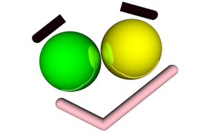 | 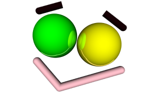 |
The default angle used by XSight RT is 60 degrees. If you use a smaller angle, the effect is similar to zooming in the scene, since the number of pixels in the output image remains unchanged. You can use any value for the angle between 0 and 180. As the angle approaches 180 degrees, the projection degenerates. This animated sequence was rendered from the same fixed scene, just changing the angle of the perspective camera from 180 degrees to 60 degrees:
People often think that a perspective projection would never distort a sphere. However, this image shows what happens when we put a sphere near the border of a scene:
Why is this illusion possible? That's because we only pay full attention to objects near our visual focus. Do you want to check it? Just take a look at a sphere with the corner of one of your eyes... and don't turn the head! Nevertheless, the illusion can be fought by comparing what would happen to a box with similar size and position:
| 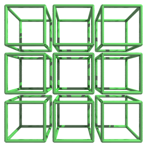 | 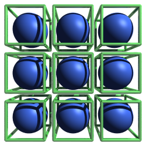 | 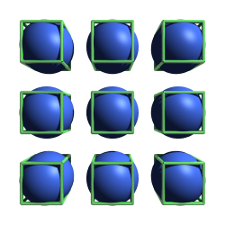 |
When a scene is projected over a flat rectangle, pixels in the projection are associated with different solid angles. As we move to the borders of the projection plane, each pixel is responsible for a broader frustum (a truncated pyramid) with its apex at the camera location. As we open the camera's angle, the effect becomes more and more pronounced.
A simple way to partially solve this problem is substituting the projection plane by a projection cylinder, as in this diagram:
Now, there's no distortion in the horizontal direction. However, there's still distortion in the vertical direction.
A cylindrical camera uses the same parameter set as the perspective camera:
These images show the difference between a plane perspective and a cylindrical one. Images in the left column were rendered with a perspective camera, while the ones at the right used a cylindrical camera. The upper row was rendered with a small angle, while the lower row used an angle greater than ninety degrees:
| 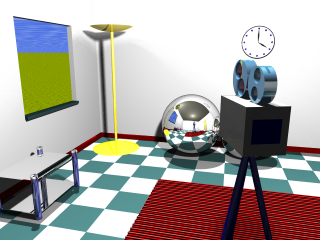 | 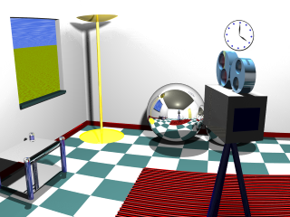 |
| 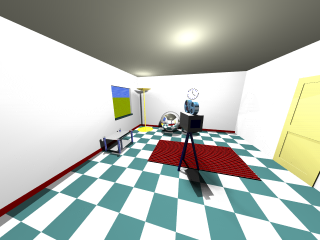 | 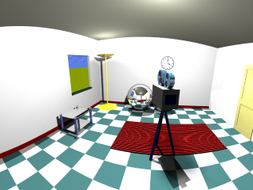 |
As you can verify, the price we pay is that, with a cylindrical perspective, lines are not always projected as lines.
Orthographic cameras use parallel rays for projecting the scene onto the projection plane. Objects that will be included in the scene are bounded by a box with an infinite depth.
Actually, the projection angle has no meaning with orthographic cameras, but XSight RT allows you to define an orthographic cameras using the same parameters as with a perspective camera. Mixing the angle with the distance to the target, XSight RT defines a scale factor so all objects intersected by the target plane be included in the bounding box defined by the orthographic camera.
Orthographic cameras display several tricky traits. For instance, if you define a sky background for the scene, you'll always see a flat backspace. That's because most background objects use the direction vector from the visual ray to select a point to sample. However, all rays cast from an orthographic camera has the same direction. Another source of weirdness is the lack of perspective. These images were rendered with a perspective camera:
| 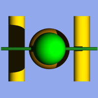 | 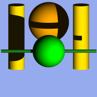 | 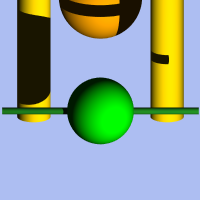 |
This image correspond to the same scene as above, but rendered with an orthographic camera:
Where's the orange sphere? Since it has the same size as the green sphere, now the green sphere hides it completely. There's another interesting detail in these images. In the first image generated with the orthographic camera, the green horizontal cylinder casts a visible shadow on the rightmost yellow vertical cylinder. However, this shadow is absent in the image generated with the perspective camera. In the orthographic view, the shadow grows as it moves deeper in the scene. Of course, this also happens in the perspective view, but the perspective effect compensates the effect and the shadow is hidden by the green cylinder. In a orthographic view, visual rays are parallel, but light rays still diverges from the point source.
Home | Small Instantiation Language overview | Scenes | Samplers | Lights | Ambient lights | Backgrounds